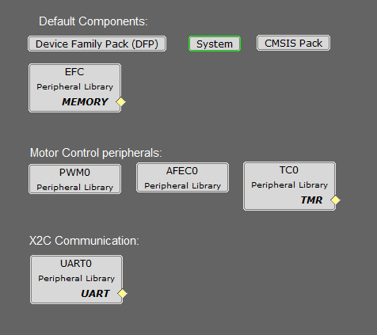

The following project graph shows the MPLAB Harmony components that are included in this application:
mclv2_sam_e70_pim.X

Components Used
- AFEC Peripheral:
- The AFEC (ADC) is used to measure analog quantities. Four channels are used to measure the Phase Current A, the Phase Current B, the DC Bus Voltage and the Potentiometer. Conversion is triggered at the PWM (zero match + offset of the switch delay)
- PWM Peripheral:
- This peripheral is used to generated three phase synchronous PWM waveforms. Fault functionality is also enabled to switch off the output waveforms asynchronously
- TC Peripheral:
- This peripheral is used in quadrature encoder mode for position measurement
- UART Peripheral:
- The UART is used for X2CScope communication to observe graphs and variable values in run time